Chromium에서 실제 UI 컴포넌트를 동일한 검증 데이터로 촬영했습니다. 운영 플레이 기록의 캡처는 아닙니다.
긴 설명에 따라 달라지던 카드 높이를 112px로 고정하고, 설명을 버튼으로 펼치도록 변경했습니다. 일반 전투 시간처럼 복합 입력이 필요한 항목은 별도 높이를 사용합니다.
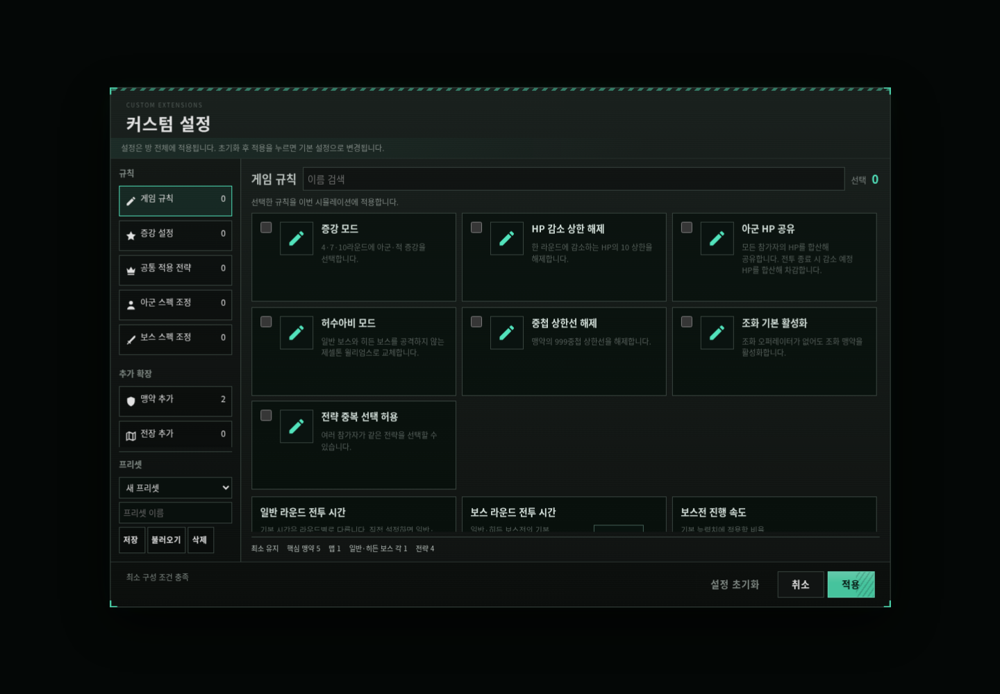
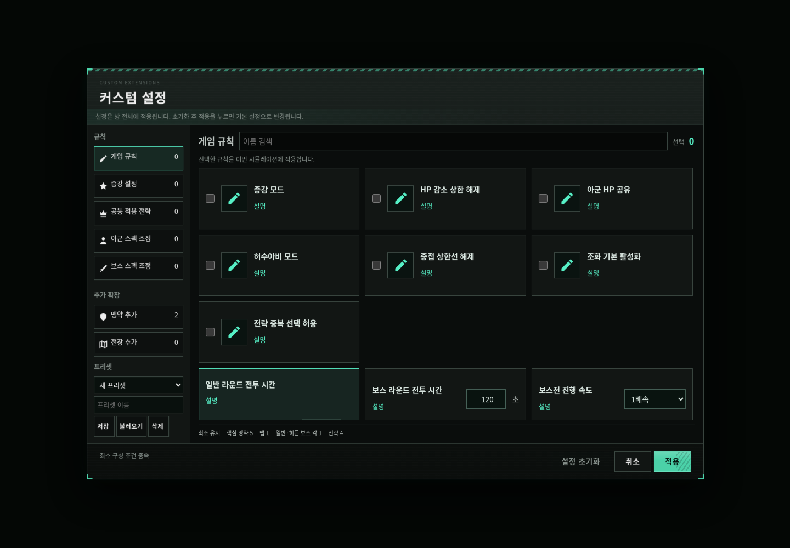
핵심 수치 4개와 상위 8개 순위를 기본 간소 보기로 정리했습니다. 어두운 패널과 민트색 선택 상태를 설정 테마와 맞췄습니다.
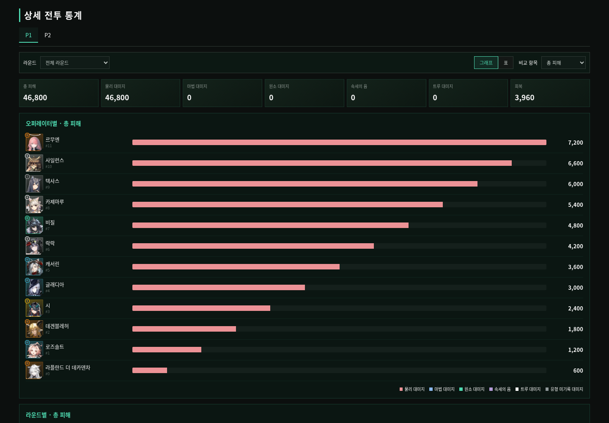
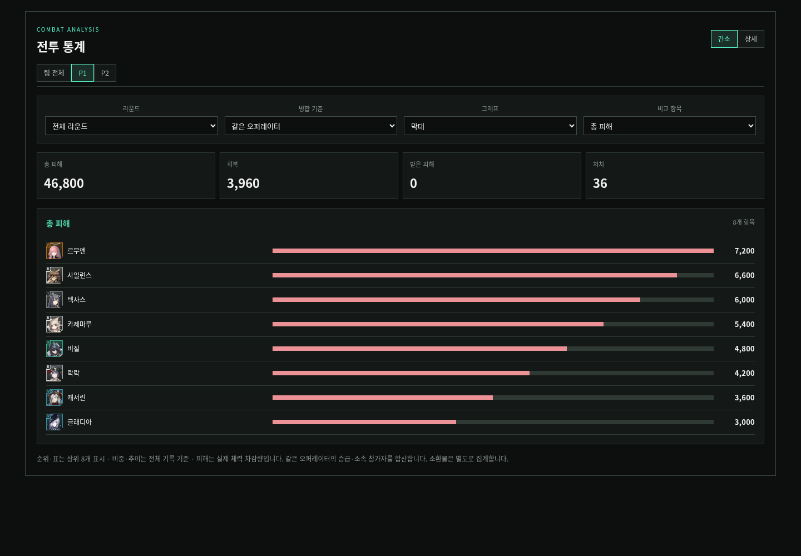
간소/상세 전환과 피해·회복·중첩·DPS·HPS·중첩/초 선택을 추가했습니다. 병합·막대/비중 보기를 지원합니다.
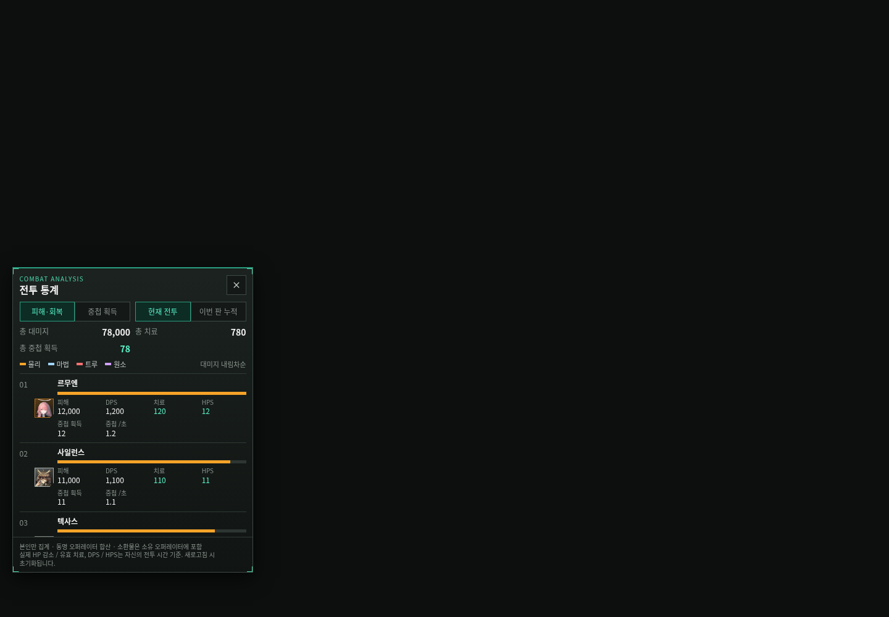
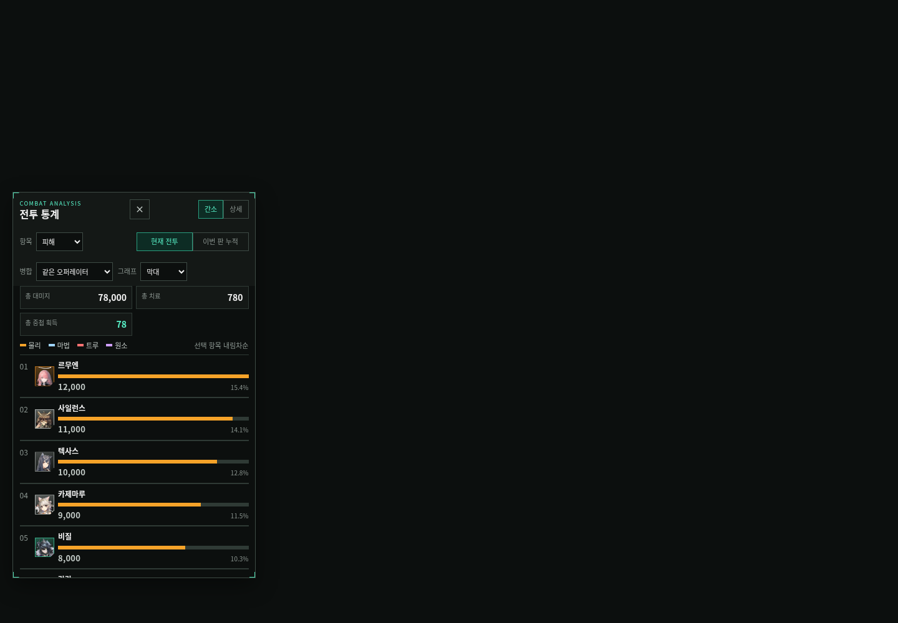
카드 너비와 입력 영역이 화면을 벗어나지 않게 하고, 분류 메뉴는 가로 스크롤 한 줄로 정리했습니다.
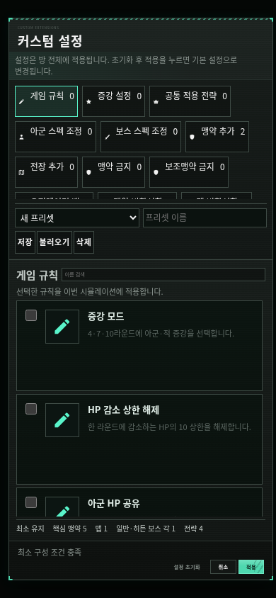
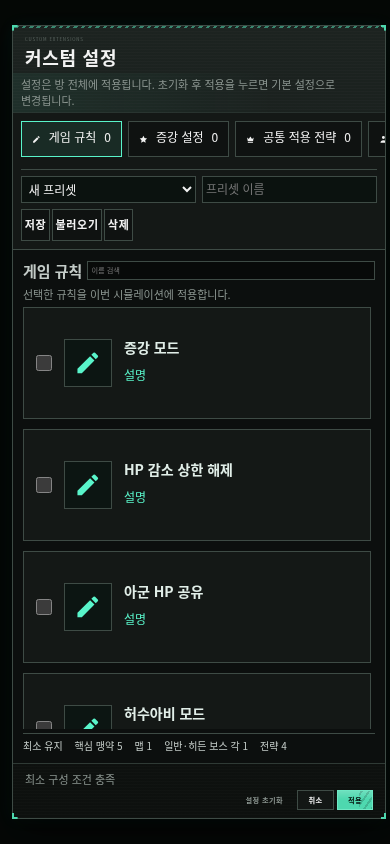
좁은 화면에서는 선택 도구와 요약 카드가 줄을 바꾸며, 긴 통계 표는 해당 영역 안에서만 가로로 스크롤합니다.
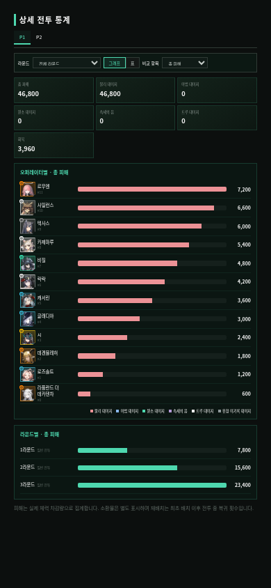
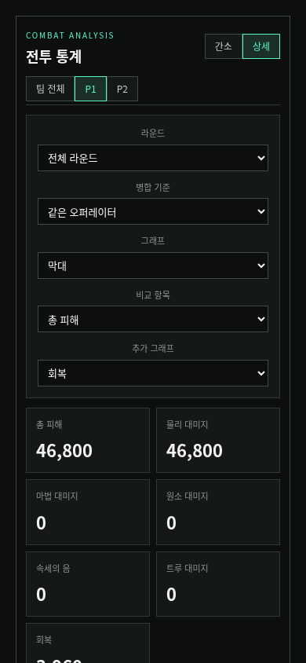
늘어난 제어부가 순위를 가리지 않도록 패널 높이와 스크롤을 조정했습니다.
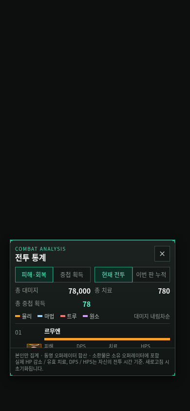
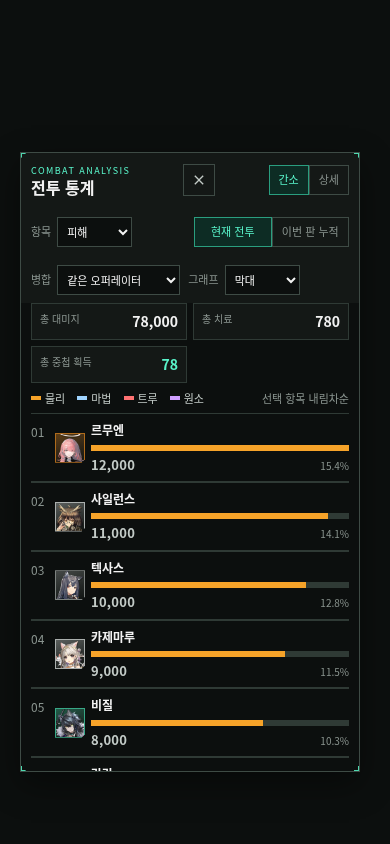
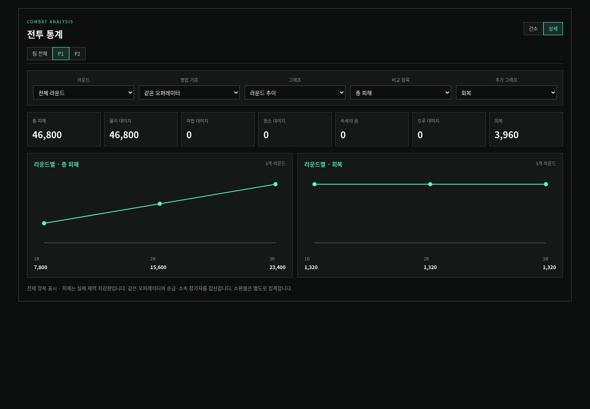
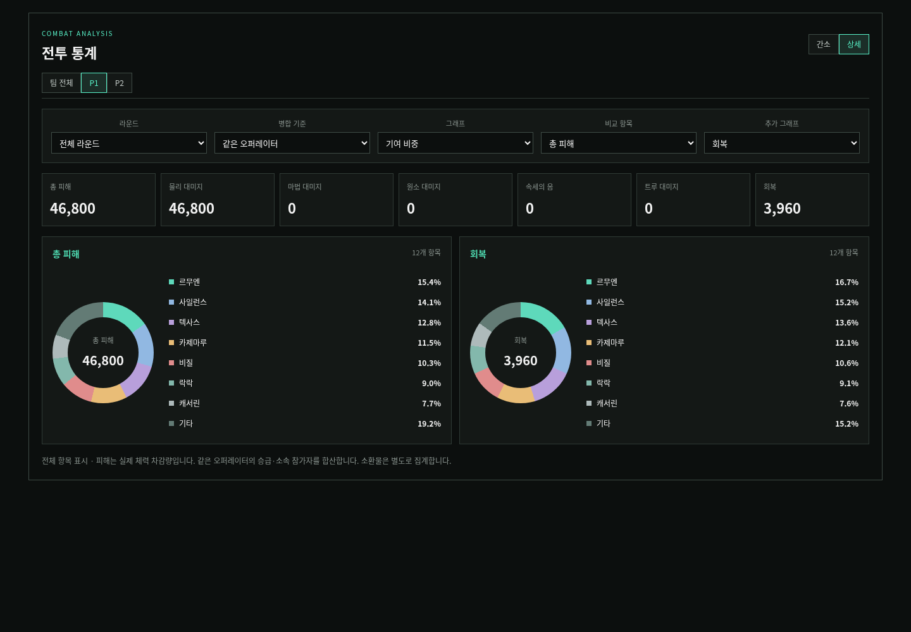